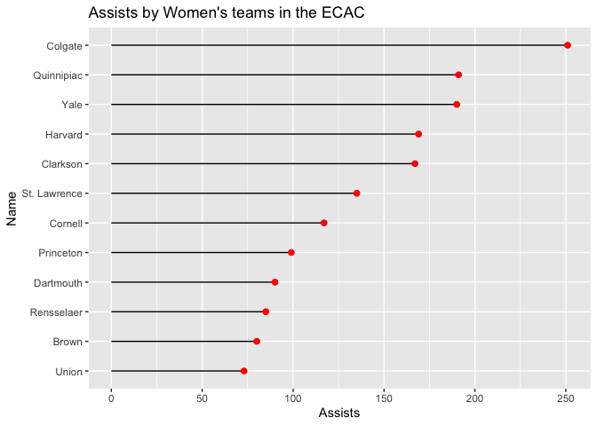
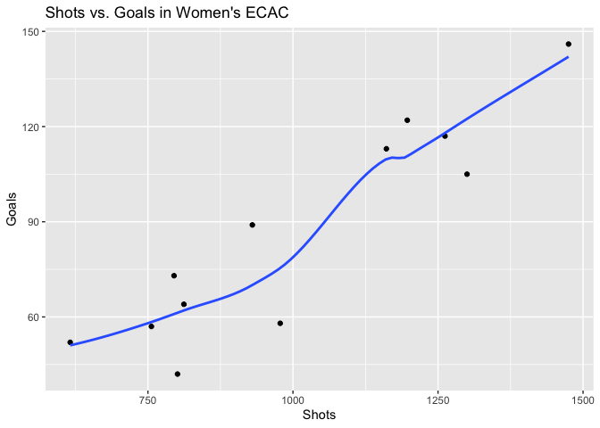
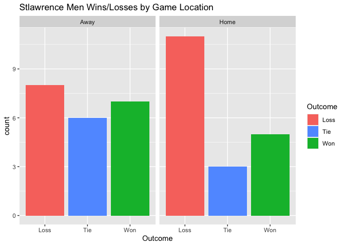
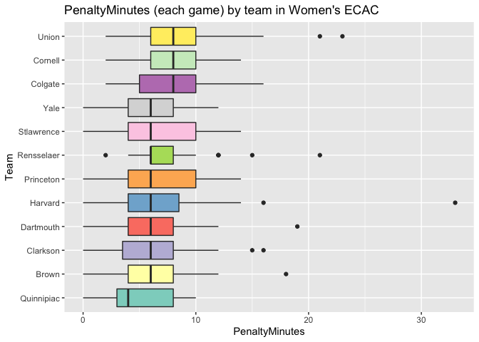
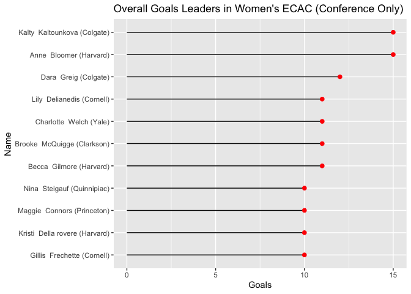
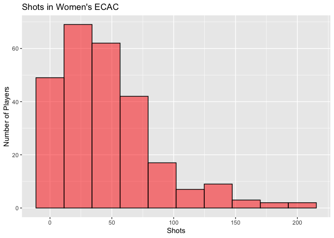

Overview
ecacr is intended to allow R users to create introductory data visualizations of ECAC Hockey teams, games, and players. ecacr makes intensive use of the tidyverse, including dplyr, stringr, and ggplot2. Keep reading to see how you can use ecacr.
Installation
This package can be used “as is” through the devtools::install_github() command.
devtools::install_github("CharlesReinhardt/ecacr")Team Visualizations
ecacr provides two data visualization templates for team level data.
scatterPlot()creates a ggplot2 scatter plot of season summary statistics for all ECAC teams. Helps highlight relationships (or lack thereof) between two summary statistics.lollipopChart()creates a ggplot2 lollipop chart (minimalist alternative to a bar chart) allowing comparison between ECAC teams by a given statistic.
Game Visualizations
ecacr provides two functions for data visualizations of game level data
boxplot()creates a ggplot2 boxplot grouped by ECAC team. Shows distribution of the given variable over the course of an entire season.winLossChart()creates ggplot2 bar chart that visualizes the win/loss habits of a single ECAC team for an entire season. Can be faceted by home/away.
Individual Visualizations
ecacr also provides two data visualizations for individual player data
histogram()creates a ggplot2 histogram that shows the distribution of a given stat across all ECAC players.overallLeaders()creates a ggplot2 lollipop chart (modified bar chart) of the overall ECAC leaders in a given stat category
Web Scraping
ecacr makes use of rvest to produce a variety of web scraping functions. These are all used internally in the previous data visualization functions for those with no prior ggplot2 experience. Use these functions to scrape the data and then manually create your own visualizations.
scrapeTeamStats()for team level datascrapeGameStats()andscrapeGameStatsByTeam()for game level datascrapeIndivStats()andscrapeIndivStatsByTeam()for player level data
Usage
Here are some sample visualizations you can create with ecacr. For more examples, click on the documentation for each individual function.
# Team Visualizations
lollipopChart(var="Assists")
scatterPlot(x="Shots", y="Goals", trend=TRUE, dynamic=FALSE)
# Game Visualizations
winLossChart(team="stlawrence", gender="men", byLocation=TRUE)
boxplot(var="PenaltyMinutes", verbose=FALSE)
# Individual Visualizations
overallLeaders(var="Goals", games="conference", players="skaters", verbose=FALSE)
histogram(var="Shots", players="skaters", verbose=FALSE)